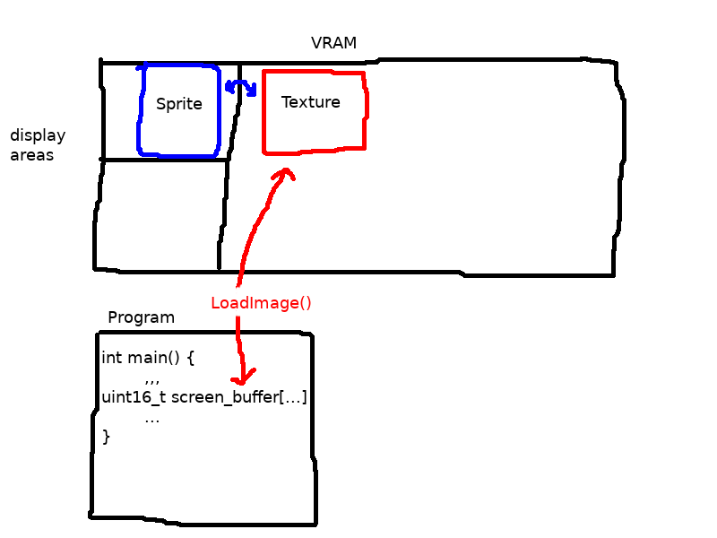
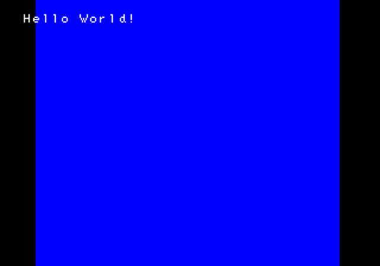
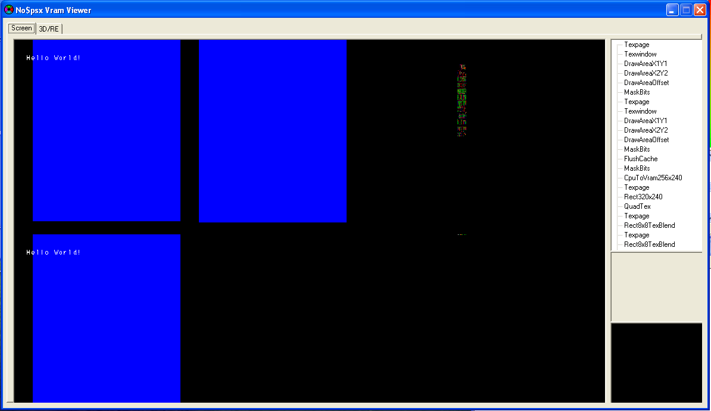
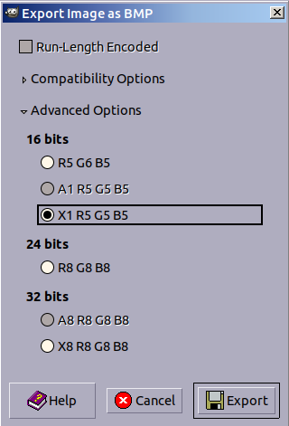
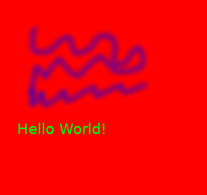
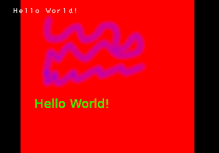
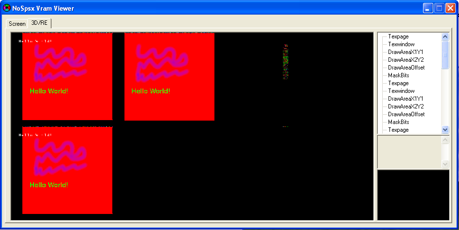
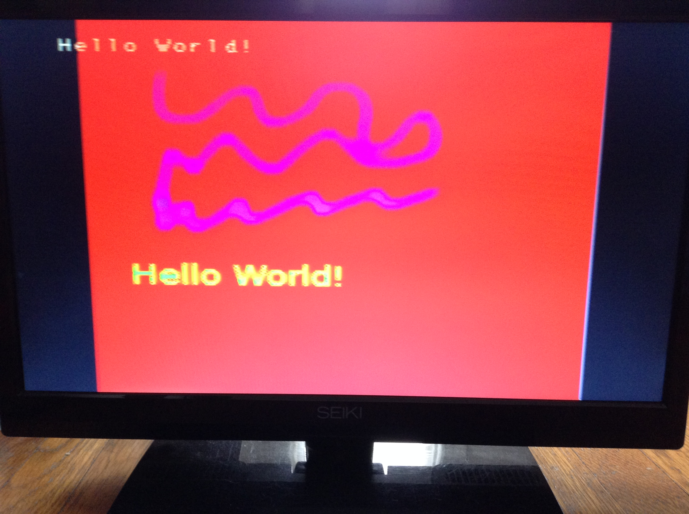

CS 598 - Project
William (BJ) Blair


Topic
My goal is to port SDL (Simple DirectMedia Layer) 1.2 to the SONY Playstation 1. SDL is a C library made to ease the creation of graphics, text, input, and sound driven applications on multiple systems. Officially, SDL is supported on Windows, Mac, Linux, iOS, and Android; however, ports for other systems include the SONY PS2, PS3, and PSP, the Nintendo DS,the AmigaOS, and others. I hope to implement SDL's graphics, input events system, and sound system to the PS1, and if time allows, extension libraries to SDL such as SDL_ttf, for font drawing.
Links
- http://libsdl.org/ - SDL homepage
- http://unhaut.x10host.com/psxsdk/ - PSX-SDK
- http://hitmen.c02.at/html/psx.html - Hitmen PSX - PSX System Info
- http://www.brainycode.com/downloads/LearningSDL011.pdf - In depth SDL tutorial (Good explanation of SDL functions, direct pixel access, etc.)
- https://problemkaputt.de/psx-spx.htm - Nocash Playstation specs - the holy grail of playstation hardware information :)
- http://onorisoft.free.fr/retro.htm - Some PS1 information and setting up SONY's official devkit in Windows 7
Code
https://bitbucket.org/williamblair/psx_sdl/
https://bitbucket.org/williamblair/psx_sdl_scratch/
Setup
Ideally, we'd wanna use a hardware debugger setup. Just recently, a user by the name of Lameguy64 released such a thing! However, it requires LiteLoad, a different method uploading from PC to PS1 using the serial port (as opposed to the parallel port of PSIO), so I won't be using it any time soon :(
Youtube: https://www.youtube.com/watch?v=YSgkBlS0oGs
Github: https://github.com/Lameguy64/PSn00b-Debugger
Instead, I'll mainly be testing on an emulator; NO$PSX, which has a good amount of debugging utility - however, it doesn't support C line by line debugging (it does for assembly, though) so it's not perfect. Basically this means I'm stuck with printf debugging for the most part.
Testing on physical hardware will be done through PSIO. You can check out my little page on psio here, but basically what it does is plug into the parallel port of the playstation and lets you run games off of an SD card.
The reason for using PSIO for hardware testing is that a) you don't have to burn your image to a CD to run it, and b) you don't even have to copy it to an SD card since you can boot directly off your PC through a usb cable that plugs into the PSIO!
You send the game from the PC to PSIO via the systems console program (Windows only, unfortunately)

Installing PSXSDK
Since the PS1 has a MIPS r3000 CPU, a MIPS GCC compiler needs to be installed first (following the `toolchain.txt` instructions included with PSXSDK source).
Installed binutils 2.31, downloaded from here. Configure and install for MIPS with:
./configure --prefix=/usr/local/psxsdk --target=mipsel-unknown-elf --with-float=soft make sudo make install
Configure and install gcc 7.2.0, downloaded from here. Configure and install with:
mkdir psx_gcc_build && cd psx_gcc_build /path/to/gcc/configure --disable-libada --disable-libssp --target=mipsel-unknown-elf \ --prefix=/usr/local/psxsdk --with-float=soft --disable-nls \ --disable-libstdc++v3 --disable-libstdc__-v3 CFLAGS=-std=c99 \ --enable-languages=c,c++ make sudo make install
Finally, install psxsdk, downloaded from here, release 20180115. First, edit
Makefile.cfgto set the proper `make`, `toolchain_prefix`, and `examples_vmode`. Examples vmode sets whether to initialize video for a PAL or NTSC playstation. toolchain_prefix is where to install psxsdk, and 'make' is the make executable to use (e.g. 'make', 'gmake', 'mingw32-make', etc.). Configure and install with:
export PATH=$PATH:/path/to/psxsdkdir make sudo make install
You should then add `export PATH=$PATH:/path/to/psxsdk` to your bashrc or profile. Then you should be able to run `psx-gcc -v` and it should output something similar to this:
Using built-in specs. COLLECT_GCC=mipsel-unknown-elf-gcc COLLECT_LTO_WRAPPER=/usr/local/psxsdk/libexec/gcc/mipsel-unknown-elf/7.2.0/lto-wrapper Target: mipsel-unknown-elf Configured with: /home/bj/gcc-7.2.0/configure --disable-libada --disable-libssp --target=mipsel-unknown-elf --prefix=/usr/local/psxsdk --with-float=soft --disable-nls --disable-libstdc++v3 --disable-libstdc__-v3 CFLAGS=-std=c99 --enable-languages=c,c++ Thread model: single gcc version 7.2.0 (GCC)
Since PSIO is windows only, all of this was done in a virtual machine running Arch Linux, with shared folders configured, so we can compile on linux and still run/access the code through windows.
Programming with psxsdk
You can find examples for psxsdk contained in the source archive, plus more here.
Here's a hello world example:
#include <psx.h>
#include <stdio.h>
unsigned int prim_list[0x4000];
volatile int display_is_old = 1;
volatile int time_counter = 0;
int dbuf=0;
void prog_vblank_handler() {
display_is_old = 1;
time_counter++;
}
int main() {
PSX_Init(); // Initialize the PSX
GsInit(); // Initialize Graphics
GsSetList(prim_list); // Tells the graphics system what memory to use to order primitives (zbuffering)
GsClearMem();
GsSetVideoMode(320, 240, EXAMPLES_VMODE); // either VMODE_PAL or VMODE_NTSC
GsLoadFont(768, 0, 768, 256); // Load the PSX bios font into VRAM memory
SetVBlankHandler(prog_vblank_handler); // calls `prog_vblank_handler()` on vblanks
while(1) {
/* don't try to draw unless the screen is ready to redraw */
if(display_is_old) {
/* switch display and draw locations to create double buffering */
dbuf=!dbuf;
GsSetDispEnvSimple(0, dbuf ? 0 : 256);
GsSetDrawEnvSimple(0, dbuf ? 256 : 0, 320, 240);
GsSortCls(0,0,0);
GsPrintFont(70, 120, "Hello world from PSX");
/* draw primitives with order based on prim_list */
GsDrawList();
/* Wait for the GPU to finish */
while(GsIsDrawing());
display_is_old=0;
}
}
return 0;
}
Here's the helloworld example running on the playstation via PSIO:

And here's the helloworld example running in the NO$PSX emulator:

About the Playstation 1
Specs: (Information from Wikipedia)
- Modified MIPS R3000A 32-bit RISC CPU, runs at 33.8688 MHz
- Geometry Transformation Engine (GTE)
- Coprocessor inside the CPU
- Handles Vector Math for 3D Graphics
- High Speed Matrix Multiplications
- 66 MIPS (Millions of Instructions per Second)
- Rendered Polygons per Second
- 90,000 with texture mapping/lighting/Gouraud Shading
- 180,000 with texture mapping
- 360,000 with flat shading
- 2MB RAM
- BIOS ROM stored in 512kb
- 32-bit SONY Gpu
- 1MB VRAM (1024x512 at 16 bits framebuffer)
- 2KB texture cache
- Resolutions: 256x224..640x240 progessive, 256x448..640x480 interlaced
- 4bit, 8bit, 15bit, or 24bit color
- Maximum 4,000 sprites on screen (at 8x8 size), 256x256 maximum sprite size
Playstation VRAM
Below is a visual representation of the PSX's VRAM from a sprite creation utility called TIM Tool. (TIM is the image format normally used by the playstation.) The VRAM is divided into 32 texture pages of size 64x256px. The max width of a sprite texture is 256x256px, or 4 texture pages wide. (Although, in practice a width of 255, NOT 256 actually worked for me!)
- The far left of the VRAM is what is actually displayed on the T.V., and is split into a top and bottom half for double buffering.
- The top right is normally used to store texture data
- The bottom right is normally used to store CLUTs (Color Lookup Tables) for 8bit and 4bit display modes.

Base image courtesy of Orion's PSX Page
As you can see on the far left, the standard display buffer takes up 5 texture pages, or 320x256px. This is the normal resolution used by most games for the playstation.
The frame buffer is NOT directly accessible through memory (no dma); instead you have to send commands to the GPU, through registers GP0 and GP1.
Using our own framebuffer
SDL requires that we have direct access to pixels for blitting/drawing, so what we'll do is store a local framebuffer within our program which we can that upload as a sprite to the GPU. That is, our local framebuffer will be the texture used by a sprite that we create.
PSXSDK allows you to send data directly to a location in VRAM (based on a GPU command) via the 'LoadImage()' function:
void LoadImage(void *img, int x, int y, int w, int h)
Here's a diagram of what's going on:

/*
* Base Example of having a Sprite framebuffer
*/
#include <stdio.h>
#include <stdlib.h>
#include <psx.h>
/* Screen width and height */
#define S_WIDTH 320
#define S_HEIGHT 240
/* Max sprite texture size
* notice its 255 and NOT 256!
*/
#define MAX_SPR_SIZE 255
/* Macro for creating a 16bit BGR color
* PSX does Blue, Green, Red instead of Red, Green Blue
*/
#define RGB16(R,G,B) \
((((B) << 10) | ((G) << 5) | (R)) & 0xFFFF)
static unsigned int prim_list[0x4000];
static volatile int display_is_old = 1;
static volatile int time_counter = 0;
static int dbuf = 0;
static void prog_vblank_handler(void) {
display_is_old = 1;
time_counter++;
}
/*
* Initialize the PSX
*/
void init(void)
{
/* Basic Inits */
PSX_Init();
GsInit();
GsSetList(prim_list);
GsClearMem();
/* Video Mode */
GsSetVideoMode(S_WIDTH, S_HEIGHT, VMODE_NTSC);
/* BIOS Font */
GsLoadFont(768, 0, 768, 256);
/* VBlank handler */
SetVBlankHandler(prog_vblank_handler);
}
int main(void)
{
int i;
uint16_t screen_buffer[MAX_SPR_SIZE * S_HEIGHT]; // our local buffer to draw to
GsSprite screen_sprite; // sprite that will map to the above buffer
/* Used to draw a random pixel */
int R, G, B;
int x, y;
/* Initialize the PSX */
init();
/* Set screen sprite information */
screen_sprite.x = (S_WIDTH - MAX_SPR_SIZE) / 2; // center the sprite on the screen
screen_sprite.y = 0;
screen_sprite.w = MAX_SPR_SIZE; // NOT screen width, but instead max sprite size
screen_sprite.h = S_HEIGHT;
screen_sprite.u = 0; // offset within the texture page
screen_sprite.v = 0;
screen_sprite.cx = 0; // CLUT x and y (palette)
screen_sprite.cy = 0;
screen_sprite.r = screen_sprite.g = screen_sprite.b = NORMAL_LUMINOSITY; // color adjustments, NORMAL_LUMINOSITY = 128
screen_sprite.scalex = 1; // how much to scale the sprite
screen_sprite.scaley = 1;
screen_sprite.mx = (screen_sprite.w/2) * (screen_sprite.scalex / SCALE_ONE); // defines the point which the sprite is rotated around
screen_sprite.mx = (screen_sprite.h/2) * (screen_sprite.scaley / SCALE_ONE);
screen_sprite.rotate = ROTATE_ONE * 0; // rotation, ROTATE_ONE = 4096
screen_sprite.tpage = 5; // which texture page is this stored in (from left to right) the image is stored in - in this case 5 maps to the x,y location (320,0)
screen_sprite.attribute = COLORMODE(COLORMODE_16BPP); // What color depth
/* Fill in the screen buffer */
for (i=0; i < MAX_SPR_SIZE * S_HEIGHT; ++i) {
screen_buffer[i] = RGB16(0,0,31); // Blue
}
/* Main Loop */
for (;;)
{
if (display_is_old) {
/* Switch the drawing and display areas */
GsSetDispEnvSimple(0, dbuf ? 0 : 256);
GsSetDrawEnvSimple(0, dbuf ? 256 : 0, 320, 240);
/* Switch display buffers */
dbuf = !dbuf;
/* Clear the Screen */
GsSortCls(0,0,0);
/*
* Copy our local display buffer to VRAM
*
* We send it to location (320,0) as this corresponds
* to texture page 5 that we specified above in
* screen_sprite (each tpage = 64px width, 64*5=320)
*/
LoadImage(screen_buffer, 320, 0, MAX_SPR_SIZE, S_HEIGHT);
while(GsIsDrawing());
/* Add the sprite to prim list, so it can be drawn */
GsSortSprite(&screen_sprite);
/* Because the image is just a sprite, we can still
* draw other stuff on the screen via the PSX, for
* example some text:
*/
GsPrintFont(20, 20, "Hello World!");
/* Draw everything in the prim list */
GsDrawList();
while(GsIsDrawing());
/* Set the flag to prevent redrawing
* until the image has been sent to the t.v.
*/
display_is_old = 0;
}
}
return 0;
}
Which looks like this when it's running:

And, using NOPSX's VRAM viewer, we can see what the running program looks like in VRAM:

Drawing BMP images
One of the most basic and useful SDL functions is SDL_LoadBMP, which fills a SDL Surface with a BMP image. Information about the BMP file format can be found on Wikipedia. Although a BMP image can be 1,4,8,16,24, or 32 bits per pixel, it makes the most since for us to use 16bit sense that natively matches the PS1 Vram. I created the test BMP image for this program using GIMP and specifying X1R5G5B5 as the output format:
Some caveats I ran into when translating from the BMP format to the PSX is that
- The Blue and Red components of each pixel need to be switched, since as mentioned above, the PSX stores pixels in BGR format instead of RGB
- Pixels are stored the bottom up instead of the top down, which means that the y coordinates of each pixel need to be flipped
- The BMP format stores rows of pixels aligned to 4bytes, which means we need to add padding if necessary when calculating the position of the pixel within the source BMP
Here's the resulting code, adapted from the screenbuffer code earlier:
/*
* Example loading a BMP image
*/
#include <stdio.h>
#include <stdlib.h>
#include <psx.h>
/* Screen width and height */
#define S_WIDTH 320
#define S_HEIGHT 240
/* Max sprite texture size */
#define MAX_SPR_SIZE 255
/* Macro for creating a 16bit BGR color
* PSX does Blue, Green, Red instead of Red, Green Blue
*/
#define RGB16(R,G,B) \
((((B) << 10) | ((G) << 5) | (R)) & 0xFFFF)
static unsigned int prim_list[0x4000];
static volatile int display_is_old = 1;
static volatile int time_counter = 0;
static int dbuf = 0;
static void prog_vblank_handler(void) {
display_is_old = 1;
time_counter++;
}
/*
* Initialize the PSX
*/
void init(void)
{
/* Basic Inits */
PSX_Init();
GsInit();
GsSetList(prim_list);
GsClearMem();
/* Video Mode */
GsSetVideoMode(S_WIDTH, S_HEIGHT, VMODE_NTSC);
/* BIOS Font */
GsLoadFont(768, 0, 768, 256);
/* VBlank handler */
SetVBlankHandler(prog_vblank_handler);
}
typedef struct {
uint16_t header; // the header field
uint32_t filesize; // size of the file in bytes
uint32_t reserved; // 4 bytes of reserved data (depending on the image that creates it)
uint32_t pix_offset; // 4 bytes - offset (i.e. starting address) of where the pixmap can be found
} BMP_header;
/*
* Load BMP (assumes is 16bit)
*/
void load_bmp(const char *filename, uint16_t *buffer)
{
int i,j;
uint8_t r,g,b;
uint16_t pixel_buffer[(MAX_SPR_SIZE+1)*S_HEIGHT]; // holds the pixels from the bmp, before we process them
BMP_header header;
uint32_t dib_header_size;
uint32_t image_width, image_height;
uint16_t num_planes;
uint16_t bits_per_pixel;
uint32_t compression; // BI_BITFIELDS, 3 == no compression used
uint32_t image_size; // size of raw bitmap data, including padding
uint32_t x_meter, y_meter; // Pixels per meter (print resolution)
uint32_t num_colors; // number of colors in a color table (CLUT)
uint32_t important_colors; // important color count
uint32_t rmask, gmask, bmask; // red, green, blue mask
uint32_t amask; // alpha mask
uint32_t bytes_read;
uint32_t padded_width; // the image width aligned/padded to the nearest 4 bytes
FILE *fp = fopen(filename, "r");
if (!fp) {
printf("Failed to open %s!\n", filename);
return;
}
/* Read in the BMP header */
fread(&header.header, 2, 1, fp); // Read in the header
fread(&header.filesize, 4, 1, fp); // Read in the file size
fread(&header.reserved, 4, 1, fp); // Read in reserved
fread(&header.pix_offset, 4, 1, fp); // Read in the pixel offset
/* DIB header info */
fread(&dib_header_size, 4, 1, fp);
fread(&image_width, 4, 1, fp);
fread(&image_height, 4, 1, fp);
fread(&num_planes, 2, 1, fp);
fread(&bits_per_pixel, 2, 1, fp);
fread(&compression, 4, 1, fp);
fread(&image_size, 4, 1, fp);
fread(&x_meter, 4, 1, fp);
fread(&y_meter, 4, 1, fp);
fread(&num_colors, 4, 1, fp);
fread(&important_colors, 4, 1, fp);
fread(&rmask, 4, 1, fp);
fread(&gmask, 4, 1, fp);
fread(&bmask, 4, 1, fp);
fread(&amask, 4, 1, fp);
/* don't really care about the rest of the header info, we'll skip to pixels now */
fseek(fp, header.pix_offset, SEEK_SET);
/* when reading, we might need to adjust width with 4byte aligned padding
* e.g. the rowsize equation from here:
* https://en.wikipedia.org/wiki/BMP_file_format
* align to 2 instead of 4 since uint16 = 2 bytes each
*/
padded_width = image_width+(image_width%2);
printf("Padded width: %d\n", padded_width);
/* Info! */
printf("Header: 0x%X\n", header.header);
printf("Filesize: %d bytes\n", header.filesize);
printf("Reserved: 0x%X\n", header.reserved);
printf("Pix offset: %d\n", header.pix_offset);
printf("\nDIB header size: %d\n", dib_header_size);
printf("Image width, height: %d,%d\n", image_width, image_height);
printf("Planes: %d\n", num_planes);
printf("Bits Per Pixel: %d\n", bits_per_pixel);
printf("Compression: %d\n", compression);
printf("Image size: %d\n", image_size);
printf("Print Resolution: %d, %d\n", x_meter, y_meter);
printf("Colors in color table: %d\n", num_colors);
printf("Important Colors: %d\n", important_colors);
printf("RGBA masks: %X, %X, %X, %X\n", rmask, gmask, bmask, amask);
printf("\nftell: %ld\n", ftell(fp));
if (bits_per_pixel != 16) {
printf("!!!!!UNIMPLEMENTED BITS PER PIXEL!!!!!\n");
printf(" Bits Per Pixel: %d\n", bits_per_pixel);
return;
}
/* read in the pixel data */
bytes_read = fread(pixel_buffer, 2, padded_width*image_height, fp);
printf("Read %d bytes\n", bytes_read);
fclose(fp);
/* now we need to flip Y, and swap the R and B components */
for (i = 0; i < image_width; ++i) {
for (j = 0; j < image_height; ++j) {
/* get the pixel at the flipped y coordinate */
uint16_t curpix = pixel_buffer[(image_height-j)*padded_width+i];
/* Extract each color component from the pixel */
b = curpix & 31;
g = (curpix>>5)&31;
r = (curpix>>10)&31;
/* set the new color (switch b and r)
* also y is flipped compared to curpix
*/
buffer[j*image_width+i] = (b<<10) | (g<<5) | r;
}
}
}
int main(void)
{
int i;
int j;
uint16_t screen_buffer[MAX_SPR_SIZE * S_HEIGHT]; // our local buffer to draw to
GsSprite screen_sprite; // sprite that will map to the above buffer
/* Used to draw a random pixel */
int R, G, B;
int x, y;
/* Initialize the PSX */
init();
/* Set screen sprite information */
screen_sprite.x = (S_WIDTH - MAX_SPR_SIZE) / 2; // center the sprite on the screen
screen_sprite.y = 0;
screen_sprite.w = MAX_SPR_SIZE; // NOT screen width, but instead max sprite size
screen_sprite.h = S_HEIGHT;
screen_sprite.u = 0; // texture coordinates I believe
screen_sprite.v = 0;
screen_sprite.cx = 0; // CLUT x and y I believe
screen_sprite.cy = 0;
screen_sprite.r = screen_sprite.g = screen_sprite.b = NORMAL_LUMINOSITY; // color offsets
screen_sprite.scalex = 1; // how much to scale the sprite
screen_sprite.scaley = 1;
screen_sprite.mx = (screen_sprite.w/2) * (screen_sprite.scalex / SCALE_ONE); // defines the point which the sprite is rotated around
screen_sprite.mx = (screen_sprite.h/2) * (screen_sprite.scaley / SCALE_ONE);
screen_sprite.rotate = ROTATE_ONE * 0; // rotation
screen_sprite.tpage = 5; // which texture page is this stored in (from left to right) the image is stored in - in this case 5 maps to the x,y location (320,0)
screen_sprite.attribute = COLORMODE(COLORMODE_16BPP); // What color depth
/*
* Load the bmp image from cd into screen_buffer
*/
load_bmp("cdrom:\\hi.bmp;1", screen_buffer);
/*
* Copy our local display buffer to VRAM
*
* We send it to location (320,0) as this corresponds
* to texture page 5 that we specified above in
* screen_sprite (each tpage = 64px width, 64*5=320)
*/
LoadImage(screen_buffer, 320, 0, MAX_SPR_SIZE, S_HEIGHT);
while(GsIsDrawing());
/* Main Loop */
for (;;)
{
if (display_is_old) {
/* Switch the drawing and display areas */
GsSetDispEnvSimple(0, dbuf ? 0 : 256);
GsSetDrawEnvSimple(0, dbuf ? 256 : 0, 320, 240);
/* Switch display buffers */
dbuf = !dbuf;
/* Clear the Screen */
GsSortCls(0,0,0);
/* Add the sprite to prim list, so it can be drawn */
GsSortSprite(&screen_sprite);
/* Because the image is just a sprite, we can still
* draw other stuff on the screen via the PSX, for
* example some text:
*/
GsPrintFont(20, 20, "Hello World!");
/* Draw everything in the prim list */
GsDrawList();
while(GsIsDrawing());
/* Set the flag to prevent redrawing
* until the image has been sent to the t.v.
*/
display_is_old = 0;
}
}
return 0;
}
Here's the bmp used:
Which looks like this when running the above code
And upon inspecting the PSX VRAM

Finally, running on the PSX through PSIO
